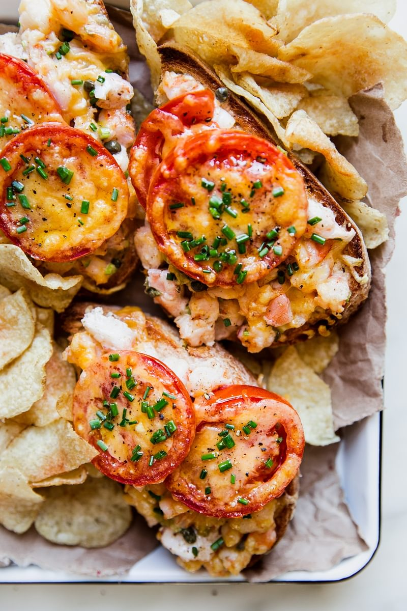

Shrimp melt with capers and old bay seasoning

Shrimp and Capers and Sharp Cheddar and Good Bread. What More Do You Need?
Nothing. Clearly, these shrimp melts are the end all, be all of shrimp recipes. And we should
know, we have tried a lot of shrimp recipes! In fact, this shrimp salad sandwich is easily the
best shrimp sandwich we’ve ever encountered. Why? Well, a few reasons:
-
Shrimp. OK, this is a pretty obvious one, but shrimp makes everything better. Loaded with
protein and—thanks, pre-cooked shrimp!—so fast, shrimp is a weekly dinnertime staple for us,
and we think it should be for you, too.
-
Old Bay seasoning! It’s common knowledge that seafood and Old Bay seasoning are best
friends—all we did was take Old Bay and sprinkle it generously into our shrimp salad recipe,
along with...
-
Capers! These briny, pickle-y little buds (yes, they’re buds!) team up with a little squeeze
of fresh lemon juice to give our mayonnaise-based shrimp salad recipe just the lift it
needs. Their sharpness also plays well with the sharp cheddar that makes our shrimp melt,
well—melty!
-
Tomato. What it is about fresh tomato slices that is just so good with hot melted cheese?
Their sweet juices run into the shrimp salad as you bite into the shrimp melt and make for a
delightfully messy, totally indulgent meal.
Ingredients
- ⅓ cup mayonnaise
- 1 tablespoon fresh lemon juice (from 1 lemon)
- 1 teaspoon Worcestershire sauce
- 2 teaspoons Old Bay Seasoning
- 3 tablespoons minced celery
- 1 tablespoon finely chopped shallot
- 2 tablespoons capers
- 1 pound cooked shrimp, tails removed, roughly chopped
- 4 1-inch-thick slices of artisan bread (we like sourdough)
- 8 ¼-inch-thick slices of tomato (from 2 tomatoes)
- 1 cup grated sharp cheddar cheese
Steps
- Turn the oven on to broil.
-
In a medium bowl, whisk together mayonnaise, lemon juice, Worcestershire, Old Bay, celery,
shallot, and capers. Fold the shrimp into the mixture until evenly distributed.
-
Place bread on a baking sheet and broil until lightly toasted, about 2 minutes. Flip the
bread and toast for another 2 minutes.
-
Divide the shrimp mixture evenly between the toast. Top each with 2 slices of tomato and
sprinkle with the cheddar. Return to the oven and broil until the cheese melts and begins to
brown.
- Serve immediately.